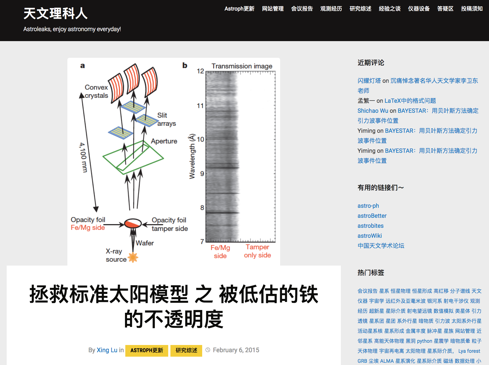

Administrator and writer of Astroleaks
Astroleaks is an on-line platform for academic discussion and expirence-sharing, initiated by Chinese graduate students after the sucessful forerunner astrobites. As an administrator: January 2014 - present As a writer: May 2011 - present
Mentor of summer interns at the CfA
I worked with interns at the Harvard-Smithsonian Center for Astrophysics in the last three summers. The interns were students from colledge and high schools and spent the summer at the CfA to conduct short-term research projects. I helped them get started with data reduction or programming, and dicussed with them frequently on their work. 2013 summer: with Zoey Bergstrom (Harvard undergraduate), Gas Temperatures in Infrared Dark Clouds Using GBT NH3 Observations 2014 summer: with Juliana Garcia-Mejia (Harvard undergraduate), SMA Observations of Massive Molecular Clouds in the Central Molecular Zone, and William Tan (Needham High School), CSO Multi-Line Mapping of Massive Molecular Clouds in the CMZ. 2015 summer: with Julian Garcia-Mejia (Harvard undergraduate), SMA Observations of Massive Molecular Clouds in the Central Molecular Zone, and Sophie Welsh (Harvard undergraduate), Radio Recombination Line Masers in Star Forming Regions.
Teaching asistant for the undergraduate course 'Radio Astronomy' at Nanjing University
Lecturer: Dr. Junzhi Wang September 2011 - January 2012
Associate editor of College Natural Sciences
College Natural Sciences is a journal organized, written, and edited by undergraduate students from universities in China. It publishes undergraduate students' reseach works in various fields from astronomy to biology, providing an opportunity for them to present their rearch to a broad audience. Associate editor of the first two issues, in charge of reviewing and editting astronomy/astrophysics related submissions, September 2009 - February 2010
Two stargazers (at Smithsonian National Museum of Natural History).